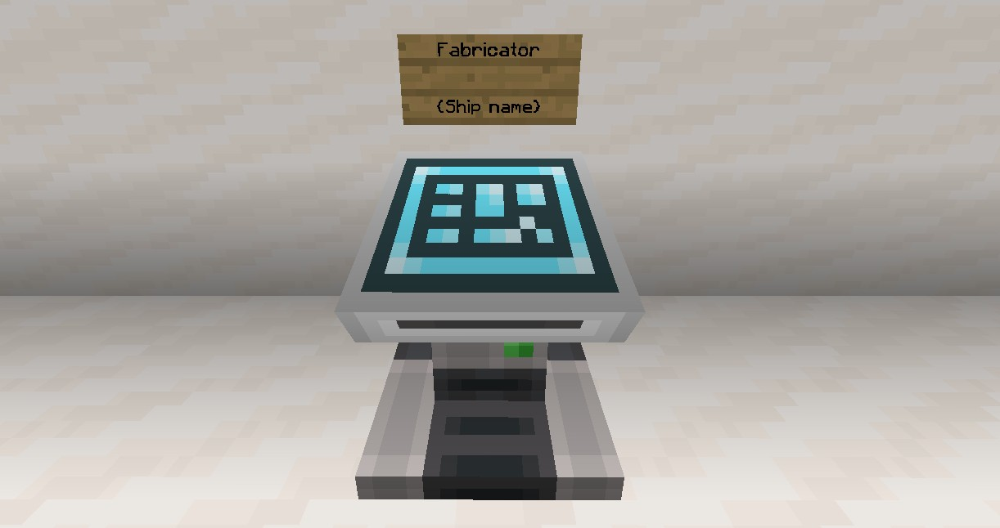

Home
Fabrication / Ship printing
Fabricators allow you to easily save and print ships wherever you need them
Saving ships
Before printing a ship, you will need to save it as a structure, to do so pilot the ship you want saved and
type /fab save {ship name} make sure the name is short enough to fit on the single line of a sign.
Once the command is run, the craft will be released and you will get an estimated length/width/height message
in chat. The ship is now being saved, this can take a while - particularly if it is a large craft.
Once the craft is done being saved, you will get a message in chat similar to Finished Producing Savestate
For {ship name}
Managing saved ships
To view your saved ships, you can run the /fab list command, this will list all craft you have
currently saved.
You can view the price of a craft (the total cost of every block, assuming you will need them all fabricated)
with /fab price {ship name}
If you no longer need a craft savestate, you can delete it with /fab delete {ship name} This cannot
be undone!
Printing ships
Now for the important bit - actually printing your ship!
To print your saved ships you will need a fabricator , this is a multiblock structure. To make one just
place a wall sign with Fabricator written on the top line and the name of the ship to be printed on
the bottom line, above a lecturn.

A fabricator multiblock
By default, you will be charged a certain amount per block, but any items in container blocks (chests, barrels,
shulker boxes.) within a 3.5 radius of the fabricator, will be used in the ship, for instance if you have a
stack of white wool in a chest next to the fabricator, and your craft requires white wool in it's design, the
fabricator will automatically take what it needs, and charge you for any extra blocks that aren't included.
Once you are ready for the ship to be printed, right-click the sign.
If something goes wrong and you need to stop it while being fabricated, run /fab cancel this will
immediately stop the craft from being printed.
Fabricator block prices
Here is a reformatted list of how much each block will cost to be fabricated, taken from the official fabricator prices
page
All prices accurate on 2020/05/01
Block
Price
amethyst block
1000
smithing table
750
budding amethyst
2700
small amethyst bud
750
medium amethyst bud
1250
honey block
125
honeycomb block
95
large amethyst bud
2500
amethyst cluster
4500
clay block
15
clay
15
end rod
12.5
tripwire
12.5
tripwire hook
12.5
light weighted pressure plate
25
heavy weighted pressure plate
25
deepslate
30
cobbled deepslate
30
polished deepslate
30
deepslate brick
30
cracked deepslate brick
30
deepslate tile
30
cracked deepslate tile
30
chiseled deepslate
30
cobbled deepslate wall
30
polished deepslate wall
30
deepslate brick wall
30
deepslate tile wall
30
cobbled deepslate stairs
30
polished deepslate stairs
30
deepslate brick stairs
30
deepslate tile stairs
30
cobbled deepslate slab
30
polished deepslate slab
30
deepslate brick slab
30
deepslate tile slab
30
moss carpet
25
moss block
25
brewing stand
12.5
soul sand
12.5
soul soil
12.5
target
25
tinted glass
25
cobweb
2.5
dirt
2.5
grass block
12.5
mossy cobblestone
25
infested mossy stone brick
25
mossy stone brick
25
mossy cobblestone wall
25
mossy stone brick wall
25
calcite
35
tuff
25
sponge
25
diorite
5
andesite
5
granite
5
polished diorite
20
polished andesite
20
polished granite
20
gold ore
5000
iron ore
2500
coal ore
1200
emerald ore
1500
lapis ore
4400
lapis lazuli ore
4400
lapis block
7260
redstone ore
4500
diamond ore
7500
raw gold block
900
copper block
450
raw copper block
7500
raw iron block
9800
deepslate gold ore
5750
deepslate iron ore
2500
deepslate coal ore
1000
deepslate emerald ore
7500
deepslate redstone ore
9000
deepslate diamond ore
12500
deepslate lapis ore
2200
deepslate lapis lazuli ore
2200
observer
45
blast furnace
100
coal block
3600
netherite block
9999999
ancient debris
9999999
diamond block
27500
hopper
115
cobblestone
15
cobblestone wall
17.5
stone
15
ladder
5
enchanting table
500
workbench
20
barrel
25
dispenser
25
note block
3600
mushroom stem
2500
piston
25
sticky piston
45
piston head
25
gold block
10000
iron door
75
oak door
45
warped door
45
spruce door
45
jungle door
45
birch door
45
acacia door
45
dark oak door
45
iron block
12000
grindstone
500
oak door
15
sandstone
25
smooth stone
40
smooth sandstone
40
smooth red sandstone
40
bookshelf
50
bricks
15
stone brick
15
stone bricks
15
chiseled stone brick
20
grass
25
obsidian
150
torch
5
redstone torch
7.5
purpur block
45
chest
25
trapped chest
45
crafting table
10
furnace
45
lever
5
powered iron door
75
powered redstone lever
5
redstone lever
5
stone pressure plate
15
redstone wire
12.5
redstone dust
12.5
repeater
25
jukebox
300
basalt
25
netherrack
10
nether brick
25
glowstone
30
sea lantern
125
end stone
100
redstone block
100
oak trapdoor
5
spruce trapdoor
5
birch trapdoor
5
jungle trapdoor
5
dark oak trapdoor
5
acacia trapdoor
5
crimson trapdoor
5
warped trapdoor
5
iron bar
90
huge mushroom stem
75
iron bars
90
ender rod
50
iron trapdoor
45
top-half iron trapdoor
45
any stairs
55
quartz stairs
55
redstone lamp
60
lit redstone lamp
60
emerald block
3500
beacon
360
chain
12.5
copper stairs
15
cut copper stairs
15
copper slab
15
cut copper slab
15
copper
15
cut copper
15
wall
40
button
5
stone button
5
polished blackstone pressure plate
7.5
polished blackstone button
5
any wall
40
any button
5
anvil
350
lightning rod
125
daylight detector
80
inverted daylight detector
80
quartz block
100
quartz pillar
100
smooth quartz
85
nether quartz ore
125
smooth nether quartz
20
chiseled nether quartz
50
pillar nether quartz
50
dropper
75
glass pane
12.5
glass
24
prismarine
80
magma block
45
comparator
35
lectern
250
air
0
blackstone
12.5
polished blackstone
12.5
polished blackstone brick
12.5
white stained glass
20
orange stained glass
20
magenta stained glass
20
light blue stained glass
20
yellow stained glass
20
lime stained glass
20
pink stained glass
20
gray stained glass
20
light gray stained glass
20
cyan stained glass
20
purple stained glass
20
blue stained glass
20
brown stained glass
20
green stained glass
20
red stained glass
20
black stained glass
20
white stained glass pane
4.5
orange stained glass pane
4.5
magenta stained glass pane
4.5
light blue stained glass pane
4.5
yellow stained glass pane
4.5
lime stained glass pane
4.5
pink stained glass pane
4.5
gray stained glass pane
4.5
light gray stained glass pane
4.5
cyan stained glass pane
4.5
purple stained glass pane
4.5
blue stained glass pane
4.5
brown stained glass pane
4.5
green stained glass pane
4.5
red stained glass pane
4.5
black stained glass pane
4.5
white stained hardened clay
15
orange stained hardened clay
15
magenta stained hardened clay
15
light blue stained hardened clay
15
yellow stained hardened clay
15
lime stained hardened clay
15
pink stained hardened clay
15
gray stained hardened clay
15
light gray stained hardened clay
15
cyan stained hardened clay
15
purple stained hardened clay
15
blue stained hardened clay
15
brown stained hardened clay
15
green stained hardened clay
15
red stained hardened clay
15
black stained hardened clay
15
hardened clay
15
terracotta
15
white terracotta
15
orange terracotta
15
magenta terracotta
15
light blue terracotta
15
yellow terracotta
15
lime terracotta
15
pink terracotta
15
gray terracotta
15
light gray terracotta
15
cyan terracotta
15
purple terracotta
15
blue terracotta
15
brown terracotta
15
green terracotta
15
red terracotta
15
black terracotta
15
white glazed terracotta
35
orange glazed terracotta
35
magenta glazed terracotta
35
light blue glazed terracotta
35
yellow glazed terracotta
35
lime glazed terracotta
35
pink glazed terracotta
35
gray glazed terracotta
35
light gray glazed terracotta
35
cyan glazed terracotta
35
purple glazed terracotta
35
blue glazed terracotta
35
brown glazed terracotta
35
green glazed terracotta
35
red glazed terracotta
35
black glazed terracotta
35
white wool
7.5
orange wool
7.5
magenta wool
7.5
light blue wool
7.5
yellow wool
7.5
lime wool
7.5
pink wool
7.5
gray wool
7.5
light gray wool
7.5
cyan wool
7.5
purple wool
7.5
blue wool
7.5
brown wool
7.5
green wool
7.5
red wool
7.5
black wool
7.5
white carpet
1.25
orange carpet
1.25
magenta carpet
1.25
light blue carpet
1.25
yellow carpet
1.25
lime carpet
1.25
pink carpet
1.25
gray carpet
1.25
light gray carpet
1.25
cyan carpet
1.25
purple carpet
1.25
blue carpet
1.25
brown carpet
1.25
green carpet
1.25
red carpet
1.25
black carpet
1.25
oak slab
2.5
spruce slab
2.5
birch slab
2.5
jungle slab
2.5
acacia slab
2.5
dark oak slab
2.5
crimson slab
2.5
warped slab
2.5
stone slab
2.5
sandstone slab
2.5
petrified oak wooden slab
2.5
petrified oak slab
2.5
cobblestone slab
2.5
brick slab
2.5
stone brick slab
2.5
nether brick slab
2.5
nether quartz slab
2.5
red sandstone slab
2.5
purpur slab
2.5
raw prismarine slab
2.5
prismarine brick slab
2.5
dark prismarine slab
2.5
quartz slab
2.5
smooth stone slab
2.5
granite slab
2.5
diorite slab
2.5
andesite slab
2.5
polished granite slab
2.5
polished diorite slab
2.5
polished andesite slab
2.5
mossy stone brick slab
2.5
mossy cobblestone slab
2.5
smooth sandstone slab
2.5
smooth red sandstone slab
2.5
cut sandstone slab
2.5
cut red sandstone slab
2.5
cut sandstone
11.25
cut red sandstone
11.25
smooth quartz slab
2.5
red nether brick slab
2.5
end stone brick slab
2.5
blackstone slab
2.5
polished blackstone slab
2.5
polished blackstone brick slab
2.5
oak planks
1.5
spruce planks
1.5
birch planks
1.5
jungle planks
1.5
acacia planks
1.5
dark oak planks
1.5
crimson planks
1.5
warped planks
1.5
oak stripped wood
2.5
spruce stripped wood
2.5
birch stripped wood
2.5
jungle stripped wood
2.5
acacia stripped wood
2.5
dark oak stripped wood
2.5
crimson stripped hyphae
2.5
warped stripped hyphae
2.5
oak wood
2.5
spruce wood
2.5
birch wood
2.5
jungle wood
2.5
acacia wood
2.5
dark oak wood
2.5
crimson hyphae
2.5
warped hyphae
2.5
oak log
2.5
spruce log
2.5
birch log
2.5
jungle log
2.5
acacia log
2.5
dark oak log
2.5
crimson stem
2.5
warped stem
2.5
oak stripped log
2.5
spruce stripped log
2.5
birch stripped log
2.5
jungle stripped log
2.5
acacia stripped log
2.5
dark oak stripped log
2.5
crimson stripped stem
2.5
warped stripped stem
2.5
oak fence
4.75
spruce fence
4.75
birch fence
4.75
jungle fence
4.75
acacia fence
4.75
dark oak fence
4.75
nether brick fence
4.75
crimson fence
4.75
warped fence
4.75
oak fence gate
4.75
spruce fence gate
4.75
birch fence gate
4.75
jungle fence gate
4.75
acacia fence gate
4.75
dark oak fence gate
4.75
crimson fence gate
4.75
warped fence gate
4.75
oak stairs
7.5
spruce stairs
7.5
birch stairs
7.5
jungle stairs
7.5
acacia stairs
7.5
dark oak stairs
7.5
crimson stairs
7.5
warped stairs
7.5
cobblestone stairs
7.5
red brick stairs
7.5
stone brick stairs
7.5
nether brick stairs
7.5
nether quartz stairs
7.5
purpur stairs
7.5
sandstone stairs
7.5
red sandstone stairs
7.5
prismarine stairs
7.5
prismarine brick stairs
7.5
dark prismarine stairs
7.5
stone stairs
7.5
granite stairs
7.5
diorite stairs
7.5
andesite stairs
7.5
polished granite stairs
7.5
polished diorite stairs
7.5
polished andesite stairs
7.5
mossy stone brick stairs
7.5
mossy cobblestone stairs
7.5
smooth sandstone stairs
7.5
smooth red sandstone stairs
7.5
smooth quartz stairs
7.5
red nether brick stairs
7.5
end stone brick stairs
7.5
blackstone stairs
7.5
polished blackstone stairs
7.5
polished blackstone brick stairs
7.5
white wall banner
12.5
orange wall banner
12.5
magenta wall banner
12.5
light blue wall banner
12.5
yellow wall banner
12.5
lime wall banner
12.5
pink wall banner
12.5
gray wall banner
12.5
light gray wall banner
12.5
cyan wall banner
12.5
purple wall banner
12.5
blue wall banner
12.5
brown wall banner
12.5
green wall banner
12.5
red wall banner
12.5
black wall banner
12.5
white standing banner
12.5
orange standing banner
12.5
magenta standing banner
12.5
light blue standing banner
12.5
yellow standing banner
12.5
lime standing banner
12.5
pink standing banner
12.5
gray standing banner
12.5
light gray standing banner
12.5
cyan standing banner
12.5
purple standing banner
12.5
blue standing banner
12.5
brown standing banner
12.5
green standing banner
12.5
red standing banner
12.5
black standing banner
12.5
white banner
12.5
orange banner
12.5
magenta banner
12.5
light blue banner
12.5
yellow banner
12.5
lime banner
12.5
pink banner
12.5
gray banner
12.5
light gray banner
12.5
cyan banner
12.5
purple banner
12.5
blue banner
12.5
brown banner
12.5
green banner
12.5
red banner
12.5
black banner
12.5
oak sign
2
birch sign
2
jungle sign
2
spruce sign
2
acacia sign
2
dark oak sign
2
crimson sign
2
warped sign
2
white bed
75
orange bed
75
magenta bed
75
light blue bed
75
yellow bed
75
lime bed
75
pink bed
75
gray bed
75
light gray bed
75
cyan bed
75
purple bed
75
blue bed
75
brown bed
75
green bed
75
red bed
75
black bed
75
white concrete
14.5
orange concrete
14.5
magenta concrete
14.5
light blue concrete
14.5
yellow concrete
14.5
lime concrete
14.5
pink concrete
14.5
gray concrete
14.5
light gray concrete
14.5
cyan concrete
14.5
purple concrete
14.5
blue concrete
14.5
brown concrete
14.5
green concrete
14.5
red concrete
14.5
black concrete
14.5
white concrete powder
7.5
orange concrete powder
7.5
magenta concrete powder
7.5
light blue concrete powder
7.5
yellow concrete powder
7.5
lime concrete powder
7.5
pink concrete powder
7.5
gray concrete powder
7.5
light gray concrete powder
7.5
cyan concrete powder
7.5
purple concrete powder
7.5
blue concrete powder
7.5
brown concrete powder
7.5
green concrete powder
7.5
red concrete powder
7.5
black concrete powder
7.5